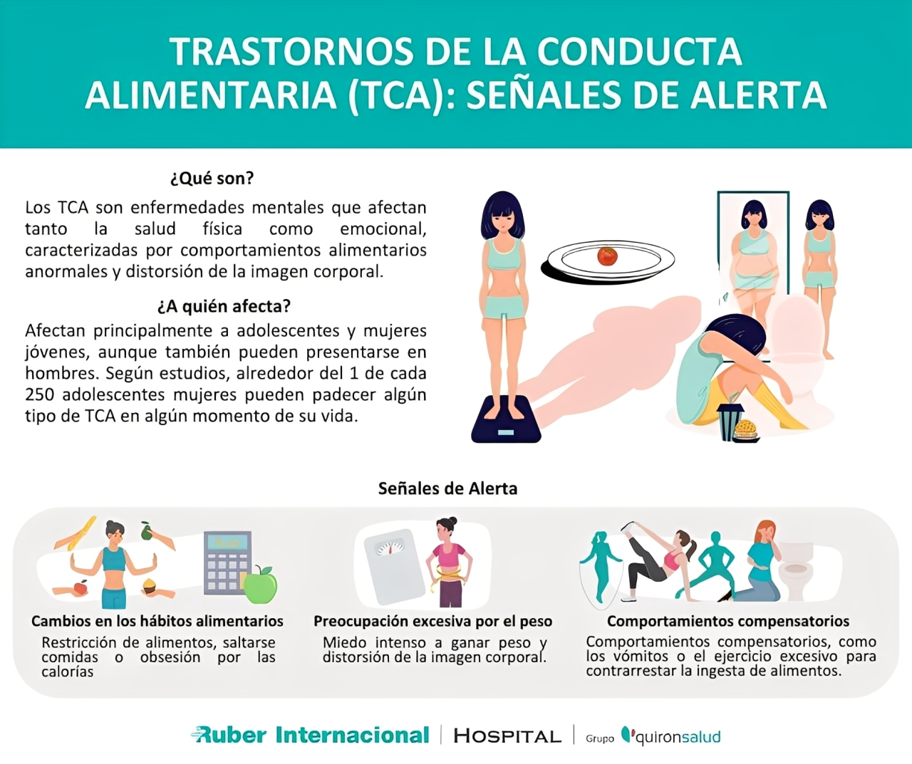

Hablemos sobre la Bulimia.
Es un tema serio, pero informarse y hablar es el primer paso para ayudar y entender. No estás solo/a.
Aprender másComprendiendo la Bulimia Nerviosa
Aquí encontrarás información clave para entender qué es, sus causas, síntomas y cómo se puede tratar.
1. ¿Qué es la bulimia nerviosa?
La bulimia nerviosa es un trastorno de la conducta alimentaria grave y potencialmente mortal. A diferencia de la anorexia, las personas con bulimia suelen tener un peso normal o sobrepeso. La característica principal es un ciclo de atracones seguidos de conductas compensatorias.
- Atracones: Ingerir mucha comida en poco tiempo, con sensación de pérdida de control.
- Conductas compensatorias: Acciones para "compensar" el atracón, como el vómito autoinducido, uso de laxantes, ayuno o ejercicio excesivo.
2. Causas y factores de riesgo
La bulimia nerviosa no surge de una única causa, sino de una compleja interacción de factores psicológicos, biológicos y socioculturales.
Factores Psicológicos
- Baja autoestima y autocrítica intensa: una sensación constante de no ser suficiente.
- Imagen corporal negativa: distorsión de la percepción del propio cuerpo e insatisfacción.
- Perfeccionismo: necesidad de cumplir estándares imposibles.
- Manejo inadecuado de emociones: dificultad para afrontar el estrés, la ansiedad o la depresión.
Factores Biológicos
- Predisposición genética: antecedentes familiares de TCA, depresión o adicciones.
- Neurotransmisores alterados: desequilibrios en serotonina y dopamina.
- Factores hormonales: cambios durante la adolescencia.
Factores Socioculturales
- Ideal de delgadez: presión por estándares de belleza poco realistas.
- Cultura de la dieta: normalización de prácticas alimentarias extremas.
- Entorno y bullying: comentarios negativos sobre el peso o burlas.
- Impacto de las redes sociales: exposición a imágenes editadas y comparaciones.
3. Síntomas y señales de alerta
La bulimia se manifiesta a través de un ciclo de atracones de comida seguidos de conductas compensatorias (como el vómito o el uso de laxantes).
Comportamiento
Obsesión con el peso, episodios de atracones, uso de conductas compensatorias y ocultamiento de este comportamiento.
Señales físicas
Hinchazón facial, daño dental por erosión del esmalte y callosidades en los nudillos (signo de Russell).
Problemas de salud
Arritmias cardíacas, daño en el esófago y fallo renal debido a la deshidratación y desequilibrio de electrolitos.
4. Tratamiento y recuperación
El tratamiento es integral y aborda las causas de fondo, no solo la comida. La recuperación es posible.
- Terapia psicológica: La Terapia Cognitivo-Conductual (TCC) es muy efectiva para cambiar pensamientos y comportamientos dañinos.
- Asesoramiento nutricional: Un profesional ayuda a establecer un patrón de alimentación saludable.
- Medicación: A veces, los antidepresivos pueden ayudar a reducir los atracones y tratar la ansiedad o depresión.
Juego: Descubre la Palabra
Selecciona las letras en orden para revelar 4 palabras de apoyo.
“Hablar de lo que me pasaba fue lo más difícil, pero también lo que me salvó. Pedir ayuda no es de débiles, es de valientes. La recuperación es un camino, pero es posible.”